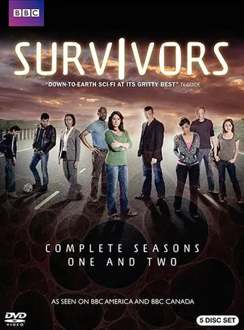

The genetics
The second series reveals that the pandemic was man-made. Mr. Landry, of the pharmaceutical consortium funding the research, admits that the virus was a genetically engineered attempt to create a universal cure for influenza that failed and escaped into the population. The same company is now racing to produce a vaccine from the blood of Abby and her son, the rare survivors without prior immunity, and treats them as resources to be captured. Its lead scientist, Whitaker, is the main antagonist of the second series: he lies to his colleagues, hides his own family in the facility against protocol and keeps the stolen anti-virus for himself, and his deception lets the virus into the lab. A trial vaccine does work on Al, but the series presents corporate science as secretive, self-serving and the origin of the apocalypse.
How genetics is portrayed
- Overall portrayal of genetics
- negative A pharmaceutical company's genetic engineering caused the apocalypse, and its scientists remain secretive and self-serving, treating survivors as raw material.
- Outcome of the genetic intervention
- negative The engineered virus killed 99.9% of humanity and a mutated strain kills Sarah; the vaccine saving Al is a small offset.
- Mr. Landry and the pharmaceutical consortium
- villain Aim: commercial, benevolent (mixed). Landry's company engineered the virus as a universal influenza cure that escaped and killed almost everyone, and now pursues Abby and Peter for their blood; the series presents it as a shadowy consortium whose sniper kills Whitaker.
- Dr. James Whitaker
- villain Aim: benevolent, personal (mixed). Whitaker develops an anti-virus from Abby's and Peter's blood but lies to colleagues, hides his family against protocol and keeps the treatment for himself; he is the second series' antagonist and is shot by Landry's sniper.
The story
A virus called European flu kills almost everyone on Earth. In Britain, Abby Grant, searching for her missing son Peter, gathers a group of strangers: the self-reliant Greg, the shaken doctor Anya, the businessman Al, the boy Najid, the opportunist Sarah and the escaped convict Tom. They face a corrupt provisional government set up by a former minister and violent gangs. Abby and Peter are the only characters to have survived the virus without prior immunity, which makes them targets for a shadowy consortium. In the second series the group finds a secure laboratory where the biochemist Dr. James Whitaker, working for a pharmaceutical company, is developing a cure from Abby's and Peter's blood; Peter had been kidnapped and held in a slave-labour camp. The company's Mr. Landry admits the virus was engineered. Whitaker is killed by Landry's sniper, Sarah dies of a mutated strain, Al survives a trial vaccine, and the series ends on a cliffhanger.